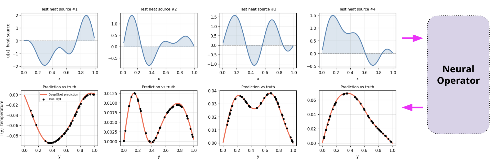
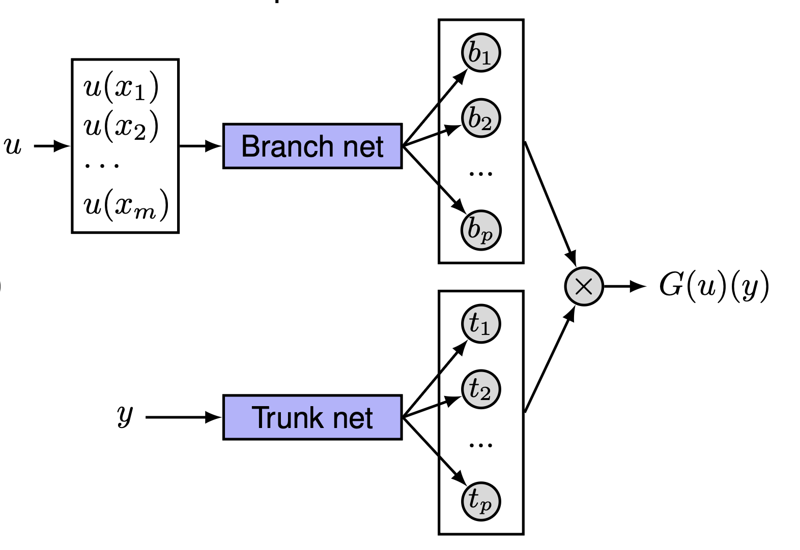
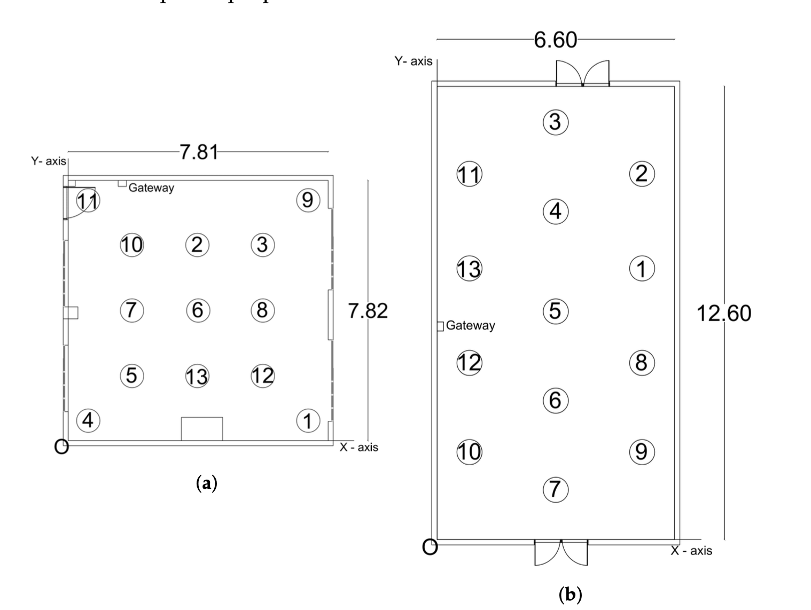
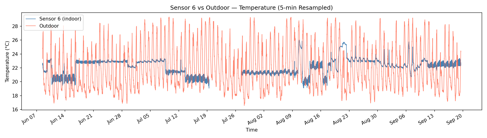
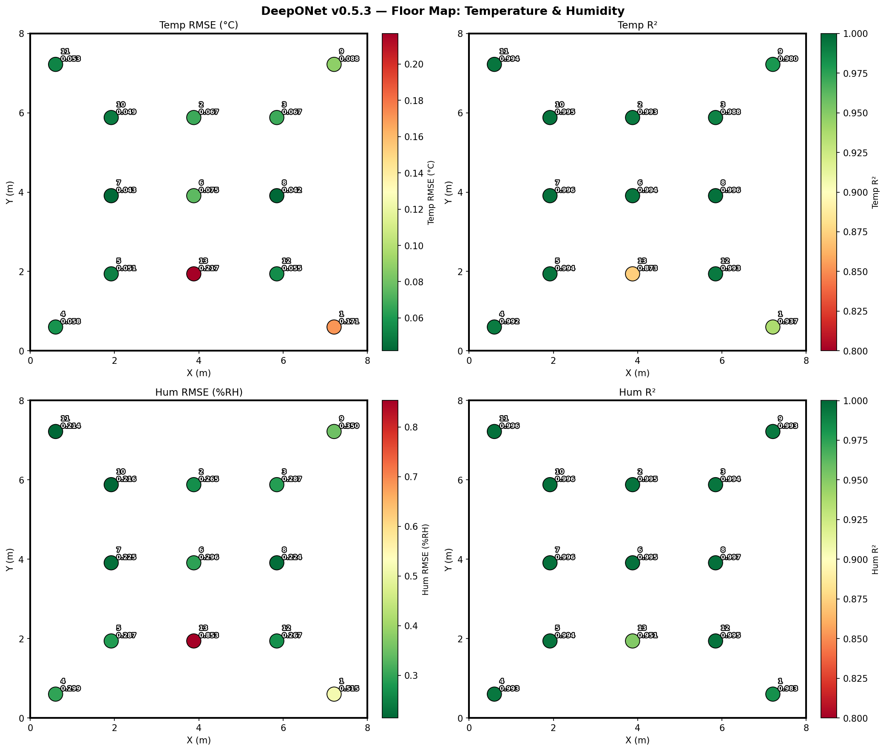
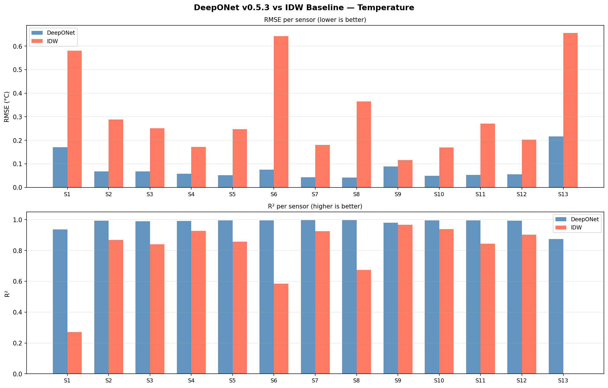
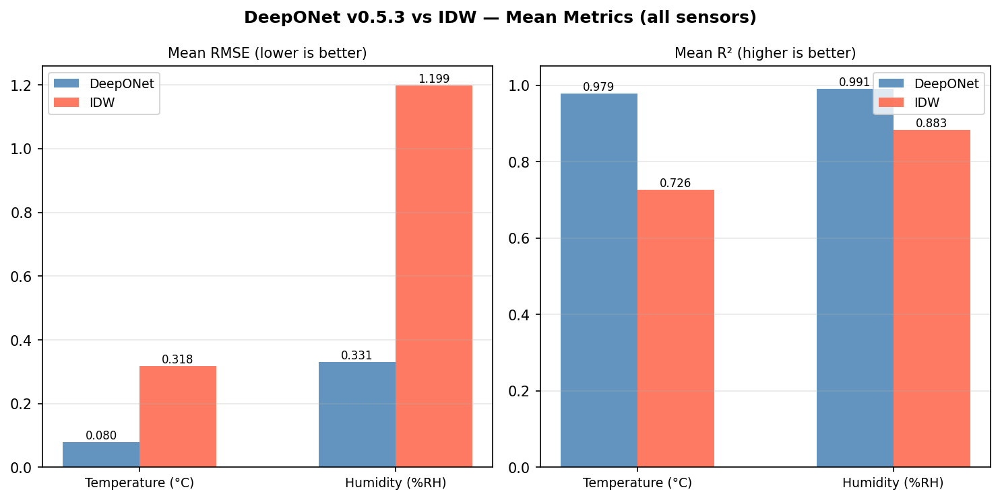
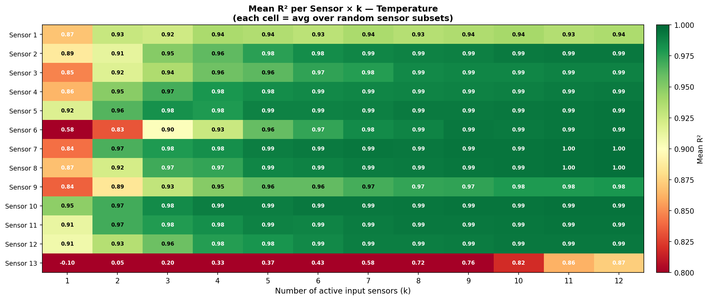
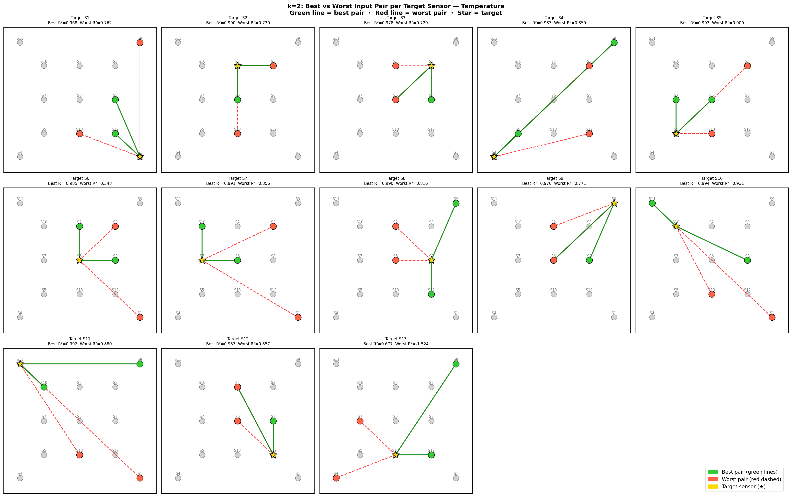
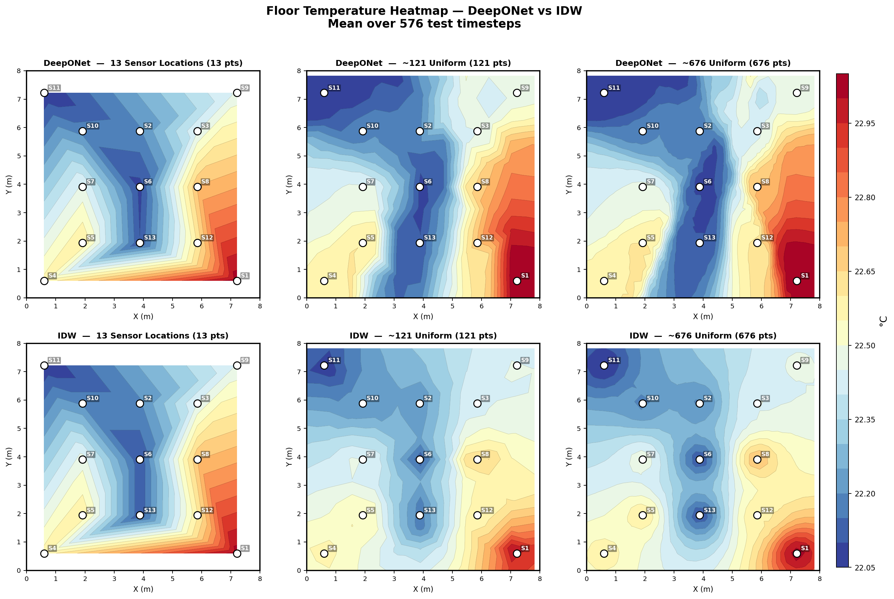

Buildings account for roughly 40% of global energy consumption, and heating, ventilation,
and air conditioning (HVAC) systems are among the largest contributors. A
thermal digital twin — a continuously updated, data-driven virtual
replica of a room's thermal state — is critical for next-generation building automation.
It enables predictive control that anticipates thermal loads rather than reacting to them,
directly reducing energy waste. Beyond energy, maintaining precise spatial temperature and
humidity conditions has measurable impacts on occupant health, cognitive performance, and
comfort — making the thermal environment an active lever for human well-being, not just
an operational cost.
2
Sensors are sparse — and we don't know how to deploy them well
Real buildings do have sensors: temperature, humidity, CO₂. But in practice they are
sparsely and often arbitrarily deployed — one sensor per room, or one per floor.
How many sensors are actually needed, and where should they go to maximally
capture the thermal dynamics of a space? This is a persistently under-investigated
problem. On top of that, sensor drift, failure, and data dropouts are common in
long-running deployments. A robust thermal digital twin must include online sensor
performance monitoring and fault diagnosis — detecting when a reading is anomalous
before that bad data corrupts the model's predictions.
3
We need high-resolution thermal comfort maps
A single thermostat reading tells you very little about whether the person by the
window is comfortable or whether the corner near the vent is overheated. What
building operators actually need is a dense, continuous thermal comfort
map of the indoor space — temperature and humidity at every point, not just
at sensor locations. Producing this map from a sparse set of sensor readings is
fundamentally a spatial reconstruction problem, and one that changes continuously
as occupancy, weather, and HVAC operation evolve.
4
Generalization: one model, many rooms
The most expensive path to building automation is training a bespoke model for every
room in every building. The most important open question is whether a model trained
on the thermal physics of one room can be transferred — zero-shot or with minimal
fine-tuning — to a different room in the same building. If the model truly learns the
underlying physics of heat diffusion rather than memorizing room-specific patterns,
generalization should be possible. Demonstrating this transferability is the key step
toward scalable, building-wide automation.
What is a Neural Operator?
Classical neural networks learn mappings between finite-dimensional vectors — given a fixed-size
input, they produce a fixed-size output. A neural operator goes one level
higher: it learns a mapping between functions. Given an entire input function
(for example, a time-varying heat source or a boundary condition defined over a spatial domain),
it produces an entire output function (for example, the temperature field at every point in
space and time). Formally, a neural operator approximates a nonlinear operator
$\mathcal{G}: \mathcal{V} \to \mathcal{C}(K_2)$ where both the input and output live in
infinite-dimensional function spaces.
Because the operator is learned in function space, the model is
discretization-independent — it can be queried at any spatial or temporal coordinate,
not just the fixed grid it was trained on.

A neural operator takes different input functions (top row: four test heat sources) and maps
each to its corresponding output function (bottom row: predictions vs. truth). The operator
is queried continuously — it is not tied to any fixed resolution.
Why Use Neural Operators for a Thermal Digital Twin?
Traditional physics-based simulators are accurate but expensive — a single forward pass of a
building energy model can take minutes. For a digital twin that must update in real time as
sensor readings arrive, that is not acceptable. Neural operators offer several properties
that make them a natural fit:
Zero-shot resolution independence. Once trained, the operator can be
evaluated at any spatial or temporal query point without retraining. There is no fixed
grid to worry about.
Learns the physics of the entire space. Rather than fitting a pointwise
regression, the operator learns the underlying governing dynamics — the map from forcing
conditions to the full temperature field. This means the learned model respects the
spatial structure of heat diffusion.
Strong generalization ability. Operators trained on a distribution of
input functions can generalize to unseen forcing conditions, and — crucially for our
project — to rooms they have never been trained on (zero-shot room transfer).
Ideal for a thermal digital twin. A digital twin needs to answer
"what will the temperature field look like given this heating schedule?" in real time.
Neural operators provide exactly this: a fast, physics-aware surrogate that takes a
measured or prescribed forcing function and outputs the predicted thermal response
everywhere in the space.
DeepONet
The theoretical foundation for neural operators is the Universal Approximation
Theorem for Operators (Chen & Chen, 1995), which guarantees that a sufficiently
wide shallow network can approximate any nonlinear continuous operator to arbitrary precision:
Theorem 1 (Universal Approximation Theorem for Operators).
Suppose that $\sigma$ is a continuous non-polynomial function, $X$ is a Banach space,
$K_1 \subset X$, $K_2 \subset \mathbb{R}^d$ are two compact sets, $V$ is a compact set in
$C(K_1)$, and $\mathcal{G}$ is a nonlinear continuous operator mapping $V$ into $C(K_2)$.
Then for any $\epsilon > 0$, there exist positive integers $n, p, m$ and constants
$c_i^k, \xi_{ij}^k, \theta_i^k, \zeta^k \in \mathbb{R}$, $w^k \in \mathbb{R}^d$,
$x_j \in K_1$ such that
$$\left| \mathcal{G}(u)(y) - \sum_{k=1}^{p} \underbrace{\sum_{i=1}^{n} c_i^k\,
\sigma\!\left(\sum_{j=1}^{m} \xi_{ij}^k\, u(x_j) + \theta_i^k\right)}_{\text{branch}}
\underbrace{\sigma(w^k \cdot y + \zeta^k)}_{\text{trunk}} \right| < \epsilon$$
holds for all $u \in V$ and $y \in K_2$.
DeepONet (Lu et al., 2021) directly operationalizes this theorem as a
trainable architecture. It consists of two sub-networks:
Branch net — takes the input function $u$ sampled at $m$ fixed sensor
locations $\{x_1, \dots, x_m\}$ and encodes it into a vector of $p$ coefficients
$\{b_1, \dots, b_p\}$.
Trunk net — takes the query coordinate $y$ (any point in the output
domain) and produces a vector of $p$ basis functions $\{t_1, \dots, t_p\}$.
The output $\mathcal{G}(u)(y)$ is the dot product $\sum_{k=1}^p b_k\, t_k$. Because the
trunk net is a continuous function of $y$, the model can be evaluated at any query point —
it is never tied to a fixed output grid. In our project, the branch net receives temperature
readings from the room's sensors as the input function, and the trunk net is queried at
arbitrary spatial locations to predict the thermal field throughout the room.

DeepONet architecture. The branch net encodes the input function $u$ sampled at sensor
locations; the trunk net encodes the query coordinate $y$. Their dot product yields the
operator output $\mathcal{G}(u)(y)$.
Dataset
Neural operators have largely been validated on simulation data — CFD outputs, finite-element
solutions, and other numerically generated fields. These datasets are clean, smooth, and
internally consistent, but they carry a sim-to-real gap: real sensors
are noisy, deployments drift, and the physics of an actual room differ from a textbook
boundary-value problem. For this project we deliberately chose a real-world dataset so that
the model is forced to learn from the kind of data it would encounter in deployment, not
from idealized surrogates.
We use the dataset published by Botero-Valencia et al. (Data 2023, 8, 82),
collected at the Instituto Tecnológico Metropolitano (ITM) in Medellín, Colombia.
It is, to our knowledge, one of the largest open indoor climate datasets, comprising
nearly 55 million timestamped records of temperature, relative humidity, and RSSI
sampled at 10-second intervals over approximately 3,915 hours (June 2022 – February 2023).
~55Mtotal sensor records
3,915 hcontinuous monitoring (~9 months)
13calibrated sensors per room
10 ssampling interval
The dataset covers two physically distinct rooms — LAB1 and LAB2 —
in the same building, which is precisely what we need for cross-room generalization experiments:
LAB1 (Modeling Laboratory, Block F room 202) — 7.81 × 7.82 m floor,
2.96 m ceiling height. Used for computational design work; typically 5 occupants,
up to 20 during meetings. Air conditioning: Comfortfresh TUB-36CRA-N1 (36,000 BTU/h
floor-roof fan coil unit on the south wall).
LAB2 (Simulation & Prototyping Laboratory, Fraternidad HQ) —
6.60 × 12.60 m floor, 4.40 m ceiling height. A larger, more open space used for
simulation and research; typically 3 occupants, up to 15. Air conditioning: York
YSM-B104V1600CFL0A (56,000 BTU/h unit with two ceiling grilles).
In each room, thirteen Xiaomi Mijia (LYWSDCGQ/01ZM) sensors were
ceiling-mounted at a known height and at precisely recorded XY coordinates — giving us a
relatively dense, spatially registered measurement network. This spatial grounding is what
enables us to treat the sensor readings as a sampled input function and ask the DeepONet
to reconstruct the full thermal field. Sensors were laboratory-calibrated (±0.1 °C,
±0.1% RH) using a Fluke 2626-H reference instrument.
The two-room structure is a key asset: a model trained on LAB1 can be evaluated
zero-shot on LAB2, giving a direct test of whether the learned operator captures
transferable room-agnostic physics or merely overfits to room-specific patterns.

Floor plan of LAB1 (left, 7.81 × 7.82 m) and LAB2 (right, 6.60 × 12.60 m) with the
positions of all 13 ceiling-mounted sensors numbered. Known XY coordinates for every
sensor enable spatial function reconstruction across the room.

Sensor 6 indoor temperature (blue) versus outdoor temperature (red) resampled at 5-minute
intervals across the full nine-month collection window. The dataset captures daily cycles,
seasonal drift, and the effect of air conditioning — all of which a real-world thermal
digital twin must handle.
Model Architecture
The interactive visualization below shows the full DeepONet architecture as implemented in
this project — 13 sensors, dual outputs (temperature + humidity), branch and trunk nets each
with depth 6 and hidden dimension 128. It also animates the sensor masking
strategy used during training: a random subset of sensors is zeroed out each epoch, teaching
the model to reconstruct the full thermal field from partial observations. Masked weights
receive zero gradient and are not updated, which is explained in the annotation panel.
Evaluation
DeepONet Per-Sensor Performance
We evaluate DeepONet v0.5.3 using a leave-one-out protocol: for each of the
13 sensors in LAB1, the model is run with that sensor's branch input masked to zero, and its
prediction at that sensor's XY coordinate is compared against the ground-truth reading. This
mirrors the real deployment scenario where a sensor may fail or be absent, and the digital
twin must infer the missing value from the remaining network.
The floor map below encodes both RMSE (circle color, red = high error) and R²
(circle color, green = high fit) at each sensor's physical XY position in the room,
for both temperature and humidity. Most sensors achieve R² > 0.99 and temperature
RMSE below 0.10 °C. The slight outliers (sensor 1 and sensor 13) are near the
air-conditioning unit — a region of higher thermal gradients where interpolation is harder.
0.080 °CMean Temp RMSE
0.979Mean Temp R²
0.331 %RHMean Hum RMSE
0.991Mean Hum R²

DeepONet v0.5.3 floor map of per-sensor RMSE and R² for temperature (top row) and
humidity (bottom row). Circle color encodes the metric value; each circle is plotted at
the sensor's physical XY position in LAB1. The vast majority of sensors achieve
R² > 0.99 with sub-0.1 °C temperature error.
To put these numbers in context, we compare DeepONet against
Inverse Distance Weighting (IDW), the classical spatial interpolation
method used in environmental monitoring and geospatial analysis. IDW is a natural
and competitive baseline for this task because it requires no training, uses all
available neighboring sensors, and is directly grounded in physical intuition — nearby
sensors should matter more than distant ones.
How IDW Works
Given $S-1$ known sensor readings $\{v_1, \dots, v_{S-1}\}$ at positions
$\{x_1, \dots, x_{S-1}\}$, IDW predicts the value at a target location $x_0$ as a
weighted average:
where $p$ is the power parameter (we use $p = 2$, the standard choice). Each neighbor
contributes in inverse proportion to the square of its Euclidean distance from the
target. Nearby sensors dominate; distant ones contribute little. The weights are
normalized so the prediction is always a convex combination of the observed values.
IDW is purely geometric — it has no memory of past states, no notion of temporal
dynamics, and no awareness of room geometry or HVAC forcing. Every timestep is
predicted independently from the current spatial snapshot.
In our evaluation we apply the same leave-one-out protocol to IDW: for each target sensor,
the prediction uses the 12 remaining sensors weighted by $1/d^2$ from the target's known
floor coordinate. This gives the fairest possible comparison — both methods see exactly the
same available inputs.

Per-sensor RMSE (top) and R² (bottom) for temperature, comparing DeepONet (blue) and IDW
(orange). DeepONet consistently achieves lower RMSE and higher R² across all 13 sensors.
The largest gaps appear at sensors 6 and 13, which sit near the AC unit — exactly where
purely distance-based interpolation struggles most.

Mean RMSE (left) and mean R² (right) aggregated across all 13 sensors for both
temperature and humidity. DeepONet reduces mean temperature RMSE from 0.318 °C (IDW)
to 0.080 °C — a 4× improvement — and humidity RMSE from 1.199 %RH
to 0.331 %RH — a 3.6× improvement. Mean R² improves from 0.726 to
0.979 for temperature and from 0.883 to 0.991 for humidity.
Sensor Optimization: How Many Sensors Do You Actually Need?
Once the model is trained, a natural question arises: does a building operator
really need all 13 sensors active at once? And which sensors are inherently
easy or hard for the model to predict — regardless of how many inputs are available?
We answer both questions through a systematic sensor ablation study.
Predictability vs. Input Budget
We ran an exhaustive search over all possible subsets of $k$ active input sensors,
for $k = 1, \dots, 12$, and measured the mean R² at each target sensor for temperature.
The heatmap below encodes the result: rows are target sensors (the ones being predicted),
columns are the number of active input sensors $k$, and each cell shows the mean R²
averaged over many random input subsets of that size.
Two patterns stand out clearly. First, most sensors saturate quickly —
by $k = 3$ or $4$, R² is already above 0.95 for the majority of locations, meaning
the full 13-sensor array is largely redundant. Second, Sensor 13 is the
hardest by far: even with 12 active inputs its R² stays at 0.87, and
with just 1 input it drops to −0.10. Sensor 13 sits directly next to the AC unit,
where local thermal gradients are steep and not well captured by far-field readings.
Sensor 6 shows the second-highest difficulty for the same reason.

Mean temperature R² for each target sensor (rows) as a function of the number of
active input sensors $k$ (columns). Each cell averages over random subsets of that
size. Most sensors reach R² > 0.95 at $k = 3$–$4$. Sensor 13 (near the AC unit)
remains the hardest target even with all 12 inputs active.
Sensor Placement Matters: Best vs. Worst Pair at k = 2
Knowing that 2–3 sensors are often sufficient raises an immediate follow-up:
which 2 sensors? The answer turns out to matter enormously.
The floor map below shows, for each target sensor, the two input sensors that yield
the best prediction (green lines) and the two that yield the
worst (red dashed lines) when only 2 inputs are active.
The spread is striking — for Sensor 13, the best pair reaches R² = 0.677 while
the worst pair collapses to R² = −1.524. Even for easier targets the gap between
the best and worst pair can exceed 0.2 in R².
This means sensor count alone does not determine prediction quality —
sensor placement is equally critical. A poorly chosen pair of sensors
can be worse than useless, while a well-chosen pair comes close to the full
13-sensor result.

For each target sensor (yellow star), the input pair that yields the highest R²
(green lines) and the pair that yields the lowest R² (red dashed lines) when only
two input sensors are active. The gap between best and worst is large for almost
every target, underscoring that sensor placement — not just sensor count — drives
prediction quality.
Interactive Sensor Explorer
The tool below lets you click any combination of sensors and instantly see the
resulting DeepONet R² and IDW R² for the selected target sensor. Use it to explore
the trade-off between sensor count and prediction quality — and to see exactly how
quickly performance degrades as sensors are removed.
Thermal Comfort Analysis
From Sparse Sensors to a Full Spatial Field
A key advantage of DeepONet as the modeling backbone is that it is a
zero-shot resolution operator: once trained, it can be queried at
any spatial coordinate — not just the 13 sensor locations used during training.
The trunk network accepts a continuous $(x, y)$ coordinate as input, so there is no
fixed output grid. This means we can sample as many query points as we want across the
floor plan to reconstruct the full spatial temperature and humidity field at arbitrary
resolution. The model was never told about those locations — it is expected to have
learned the underlying physics of the space well enough to generalize everywhere.
The figure below illustrates this directly. Each panel shows the mean predicted floor
temperature averaged over 576 test timesteps, as the number of query points is scaled
from 13 (the original sensor positions) to 121 and then 676 uniformly distributed floor
points. The top row is DeepONet; the bottom row is Inverse Distance Weighting (IDW) as
a classical spatial interpolation baseline.

Mean floor temperature heatmap (°C) averaged over 576 test timesteps.
Top row: DeepONet queried at 13, ~121, and ~676 uniform floor points.
Bottom row: IDW interpolated from the same point sets.
DeepONet produces spatially coherent, physics-consistent fields at all resolutions.
IDW, by contrast, degrades as query density grows — its estimate collapses to
Voronoi-like patches around sensor locations, revealing that it is purely
interpolating measured values rather than learning the spatial physics.
At 676 points, the hot zone near the south-east AC unit (Sensor 1) and the
cooler north corridor are clearly resolved by DeepONet but smeared by IDW.
Thermal Comfort Indices from High-Resolution Fields
With a dense, continuous prediction of temperature and humidity available at every point
on the floor, we can compute standardized thermal comfort indices across
the entire space — something impossible with a handful of sparse sensor readings alone.
We apply the ISO 7730 Fanger PMV/PPD model, which converts each
predicted $(T, \text{RH})$ pair into two occupant-centric metrics:
PMV (Predicted Mean Vote) — a seven-point thermal sensation scale
running from −3 (cold) to +3 (hot), with 0 representing thermal neutrality.
ASHRAE 55 defines the comfortable zone as PMV ∈ [−0.5, +0.5].
PPD (Predicted Percentage Dissatisfied) — the expected fraction of
occupants who would find the thermal environment unacceptable. PPD is minimized
(~5%) at perfect neutrality and rises sharply as PMV moves away from zero.
The analysis uses fixed occupant assumptions representative of the lab environment:
air speed 0.1 m/s (still air), metabolic rate 1.1 met (seated light work), and
clothing insulation 0.5 clo (light summer clothing). Mean radiant temperature is
approximated as equal to air temperature — a standard simplification in the absence
of radiometric measurements.